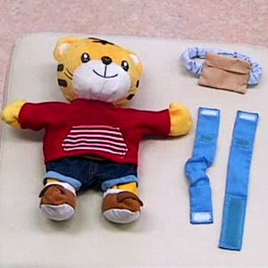

<!-- main -->
<div id="main">

<div id="kyouzai">

<div class="block">
  <h3>しまじろう3WAYホルダーの<br />取り付け方</h3>
<br />
  <p>いっしょにおでかけ！しまじろう3WAYホルダーの取り付け方が動画で確認できます。<br /></p>
</div><!-- /.block -->


<div class="block">
<p class="tx_gray">
※モバイルYouTubeを利用して動画をご覧いただけます。<br />
※モバイルYouTubeは大量のパケット通信をおこなうアプリケーションです。携帯端末からYouTubeで動画を見る前に、ご契約の携帯電話のプランが「パケット定額サービス」かどうかご確認ください。<br />
※ご利用の機種によっては動画が見られないことがあります。<br />
※音声はありません。<br />
</p>
</div><!-- /.block -->
<div class="red_btn"><a href="http://www.youtube.com/watch?v=y4bag6wpaYM" rel="external"></a><br />（約1分）
</div>


</div><!-- /#kyouzai -->

</div><!-- /#main -->
